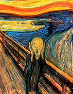

Edvard Munch
Norwegian Expressionist PainterEdvard Munch was a Norwegian painter best known for his intensely emotional and symbolic work. His themes often explored human anxiety, love, and death, laying the groundwork for the Expressionist movement.
Masterwork

The Scream (1893)
Medium: Oil, tempera, and pastel on cardboard
Dimensions: 91 cm × 73.5 cm
Description:
“The Scream” is Edvard Munch’s most famous and haunting painting, symbolizing the anxiety of the modern human condition. With swirling colors, a blood-red sky, and a distorted central figure, the painting has become a global icon of existential dread and emotional turmoil.